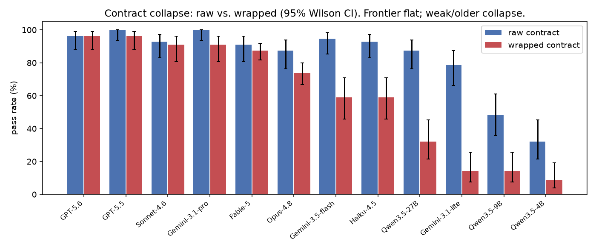
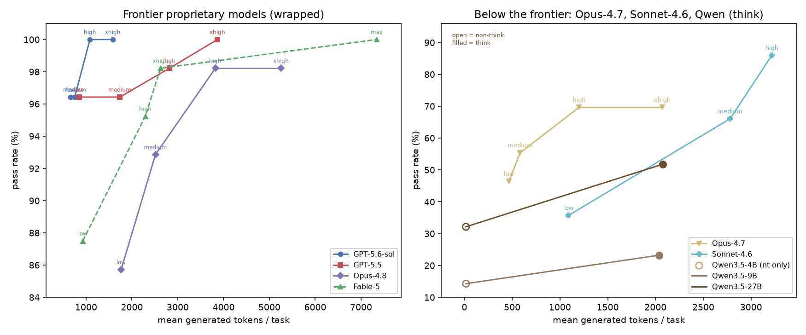
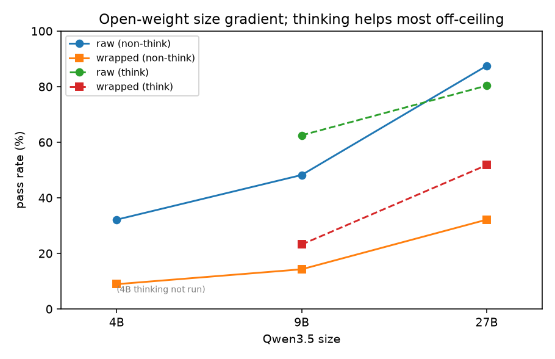
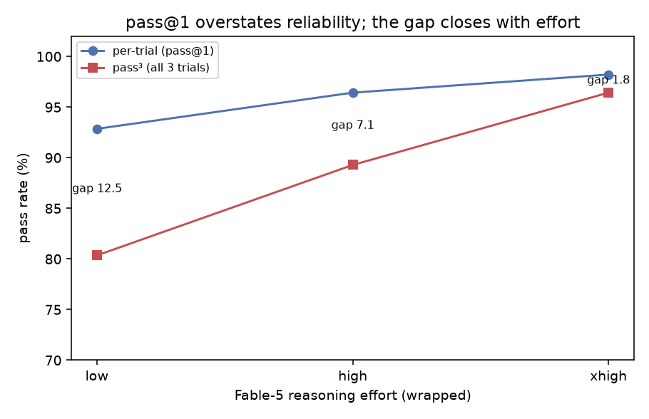

Raw shell skill is not enough.
The same command can fail when a harness wraps it in another quoting layer. QuoteBench measures raw, JSON, and wrapped transport separately.
LLM agent evaluation
A focused benchmark for the shell quoting and escaping failures that broad coding benchmarks usually hide.

Each task asks for one bash command. Scoring checks final state, not command text, so models can solve the task however they want as long as they preserve the exact bytes.
The same command can fail when a harness wraps it in another quoting layer. QuoteBench measures raw, JSON, and wrapped transport separately.
Some models spend more generated tokens without improving accuracy; others convert effort into concrete gains.
Repeated trials expose whether a model is consistently safe on byte-exact shell tasks, not merely lucky once.
The public repository includes the benchmark core, scorer, replay path, datasheet, and current headline figures.



The core benchmark uses Python standard library only. Use the Docker executor for untrusted model output and pinned GNU userland.
python3 -m quotebench validate
OPENAI_BASE_URL=http://localhost:8000/v1 OPENAI_API_KEY=... \
python3 -m quotebench run --adapter openai --model MODEL \
--contract wrapped --executor docker --out results/run.jsonl
python3 -m quotebench score results/run.jsonlStart from the spec if you want the benchmark design, or the datasheet if you need release metadata.